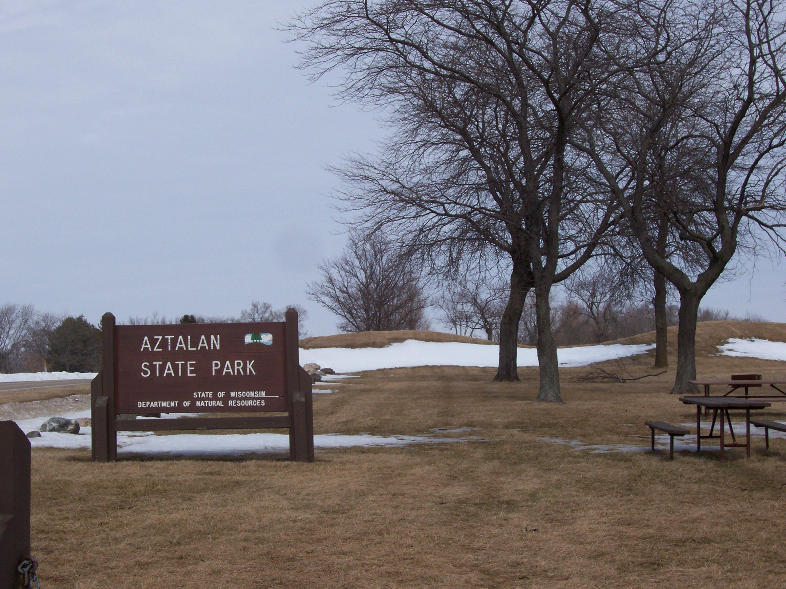

Year-roundGroup Tours
Guided tours for adults and school groups offer an immersive introduction to Aztalan's archaeological wonders. Expert guides walk visitors through the platform mounds, reconstructed stockade, and the remarkable story of the Mississippian people who built this community. Tours are available for educational groups, community organizations, and general visitors throughout the year.